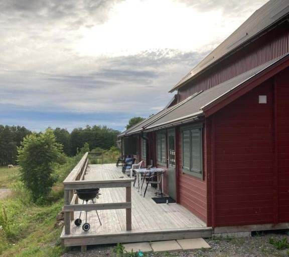
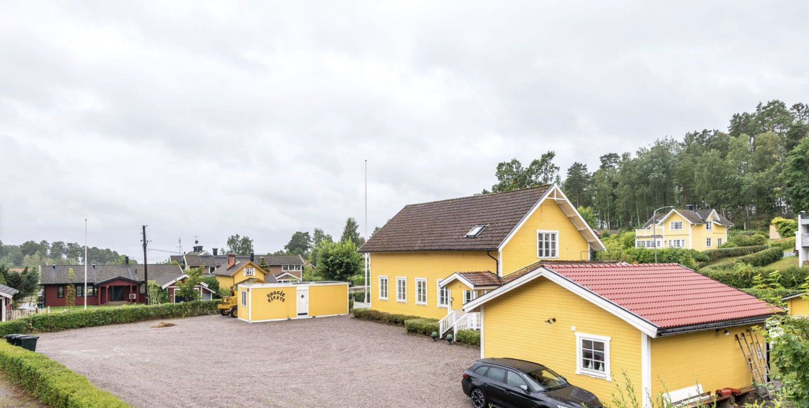
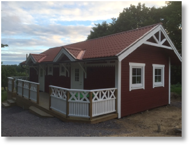
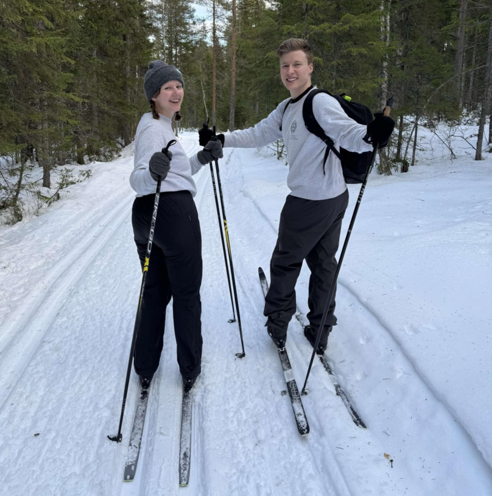

Viktig info
Hålltider
14:30 Borgerlig vigselceremoni
kl 15 Mingel, snittar och fotografering
kl 18 Bröllopsmiddag
kl 23 Fest med musik och dans
Om det skulle bli regn är vi så lite utomhus som det går. Vigseln är då i ridhuset. Festlokalen är i så fall öppen från klockan 13 för gäster som är på plats tidigt och man kan också vara i stugorna.
Adress
Bränntorps Gård
618 92 Kolmården
Både vigsel och fest äger rum på gården.
Scrolla ner för att se karta.
Boende
Asplunda gård
Gård på 15 minuters promenad från Bränntorp. Tänk på att Kolmården är ett populärt besöksmål under tiden för bröllopet och att boenden snabbt bokas upp.
Stugorna finns att boka på booking.com.
First Camp Kolmården

Stugcamping på 20 minuters promenad från Bränntorp. Tänk på att Kolmården är ett populärt besöksmål under tiden för bröllopet och att boenden snabbt bokas upp.
Stugorna finns att boka på booking.com.
Kolmården och runtom
I området runt Kolmården och Krokek finns flera boenden utöver de tidigare nämnda, som exempelvis Sandviksgården och Skogsviken Hotell. Dessa är på liknande avstånd som First Camp Kolmården.
Centrala Norrköping
I Norrköping finns flera hotell och vandrarhem med olika prisklasser och det går lätt att ta sig till och från centrala Norrköping från Bränntorps gård.
Med bil tar resan under 30 minuter och med buss (420) omkring 35 minuter.
Närmaste busshållplatsen (Marmorbruksvägen) ligger 5 minuter från gården men senare på natten kan man behöva gå bort till Sandviken, vilket är en promenad på 20 minuter.
Bränntorps gård
På gården där festen äger rum är de fåtalet stugor som finns upptagna.
Det finns plats för såväl tält som husvagn. Maila gärna obfgnq@ivqnbpuznephf.fr om du vill ha mer information om detta. Toaletter finns att tillgå i anslutning till festlokalen.
Toastmasters
Som toastmasters har vi den stora äran att presentera Ditte och Anton! Detta musicerande, styrkelyftande och Uppsalaälskande power couple består av Vidas syster och blivande svåger.
Vill du hålla ett tal eller något annat typ av framförande på festen? Allt är möjligt! Kontakta i så fall våra toastmasters på ivqnbpuznephf.gbnfgznfgref@bhgybbx.pbz.
OSA
Senast den 30 mars
Maila till: bfn@ivqnbpuznephf.fr
Berätta då också om eventuella kostpreferenser eller allergier.
Varmt välkomna!